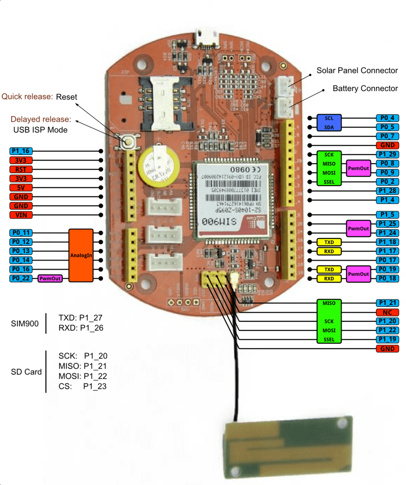

Arch GPRS V2 is the new and improved version of the Arch GPRS development board from Seeed Studio. Like the original Arch GPRS, it is also an mbed enabled development board that houses a cellular networking module along with a microcontroller. Arch GPRS V2 uses the LPC11U37 Microcontroller instead of the LPC11U24 used on the Arch GPRS. You can use the mbed C/C++ SDK, libraries and optimizing online development tools to rapidly build your Arch GPRS V2 based prototype.
The cellular networking module on the Arch GPRS is based on the SIM900 Quad-band GSM/GRPS engine from SIMCom. With this, data collection functions can be performed easily using the 2G GSM/GPRS based cellular network.
Arch GPRS V2 has a standard Arduino interface as well as Grove connectors on board. It’s convenient to connect existing Shields and Grove products to Arch GPRS V2. You can even connect a solar panel directly to the board to allow for the battery to charge from it. A low-power design guarantees easy charging and long hour operations when outdoors!
Note:
Arch GPRS V2 doesn't come with an mbed interface. To output debug messages, please try USBSerial.
| ArchGPRS V2 | ArchGPRS | |
| MCU | LPC11U27 | LPC11U24 |
| GSM/GPRS Module | SIM900 | EG-10 |
| MicroSD Card | Yes | No |

#include "mbed.h"
DigitalOut myled1(LED2); //left most LED if board is held as shown in Pinout diagram above
DigitalOut myled2(LED3); //2nd from left
DigitalOut myled3(LED4); //3rd from left
DigitalOut myled4(LED1); //4th from left (right most)
int main() {
while(1) {
myled1 = 1; //left most LED turns ON, rest off
myled2 = 0;
myled3 = 0;
myled4 = 0;
wait(1); //1 sec wait time
myled1 = 0;
myled2 = 1; //2nd from left LED turns ON, rest off
myled3 = 0;
myled4 = 0;
wait(1);
myled1 = 0;
myled2 = 0;
myled3 = 1; //3rd from left LED turns ON, rest off
myled4 = 0;
wait(1);
myled1 = 0;
myled2 = 0;
myled3 = 0;
myled4 = 1; //4th from left (right most) LED turns ON, rest off
wait(1);
}
}
If you get through the above steps successfully, this means that:
Arch doesn't have an mbed interface. It uses USB In-System-Programming (ISP) to upgrade the firmware.
To enter the USB ISP mode, connect the Arch with your computer and long press its button, and then a disk named "CRP DISABLD" will appear.
"Pass Input" option from "to stdin" to "as arguments"--without this you will get an error "The action 'Run Shell Script' encountered an error" or "dd: no value specified for if (1)" in the log.
dd if="${1}" of=/Volumes/CRP\ DISABLD/firmware.bin conv=notrunc
Very quick press the button to run the new firmware.